01
你的训练，清晰呈现。
查看周目标、训练日历、总距离、总时长与热量。回顾趋势、历史记录与个人最佳， 不再让一次认真训练埋在数字里。
- 周目标与连续训练
- 月度 / 年度统计
- 训练历史与个人最佳
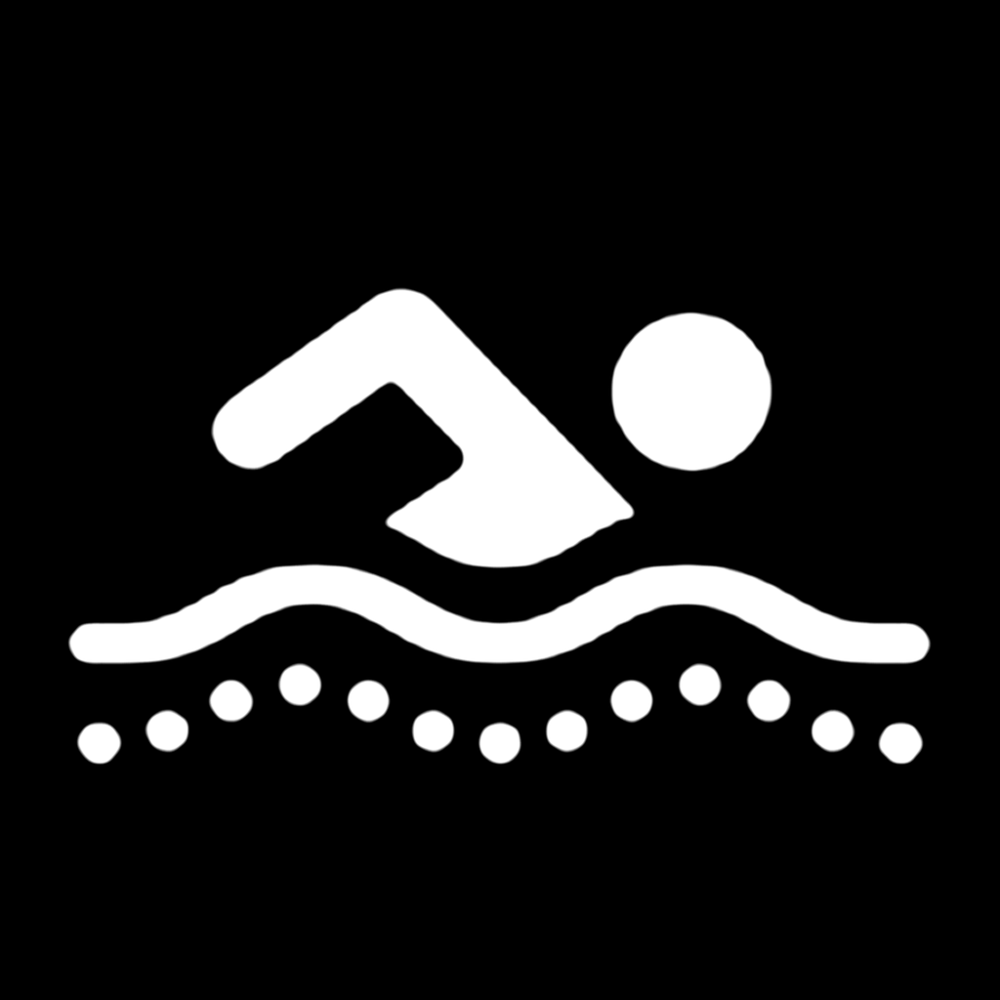
Go Swimming App Store 下载SWIM · UNDERSTAND · IMPROVE
从 Apple Watch 腕上记录，到 iPhone 与 iPad 深度复盘。 Go Swimming 把训练、数据、计划与设备端 AI，汇聚成一套清晰而私密的游泳体验。
适用于 iPhone、iPad 与 Apple Watch · 支持简体中文与英文
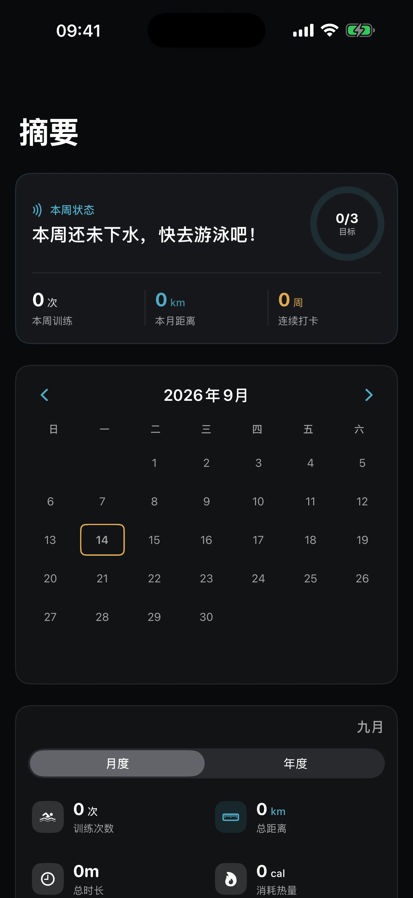
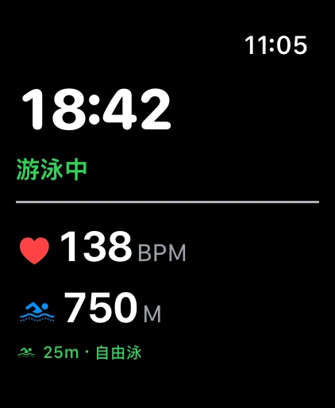
ONE COMPLETE SWIM EXPERIENCE
从泳池到开放水域，从实时指标到赛后修正，Go Swimming 让零散的数据变成真正可用的训练信息。
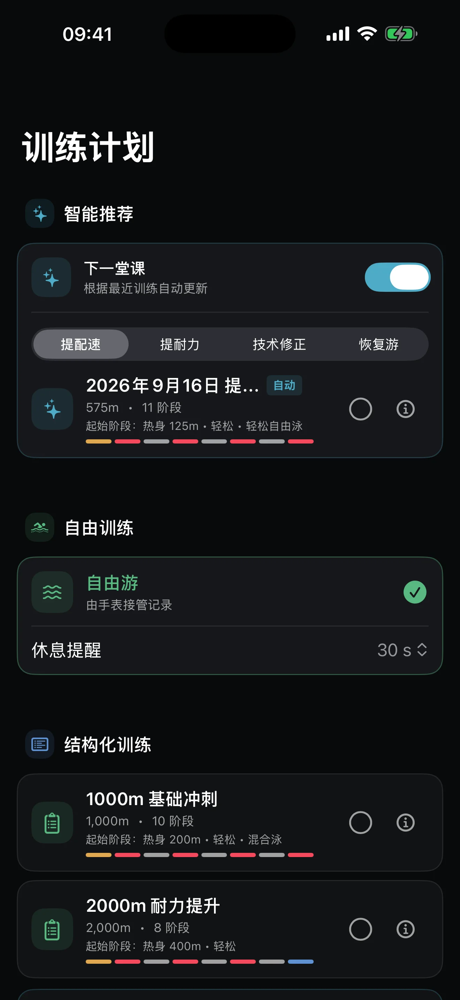
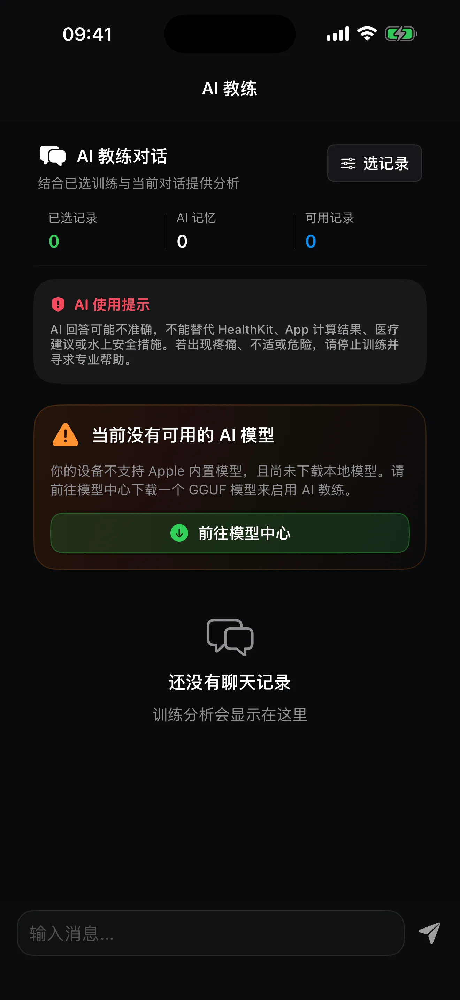
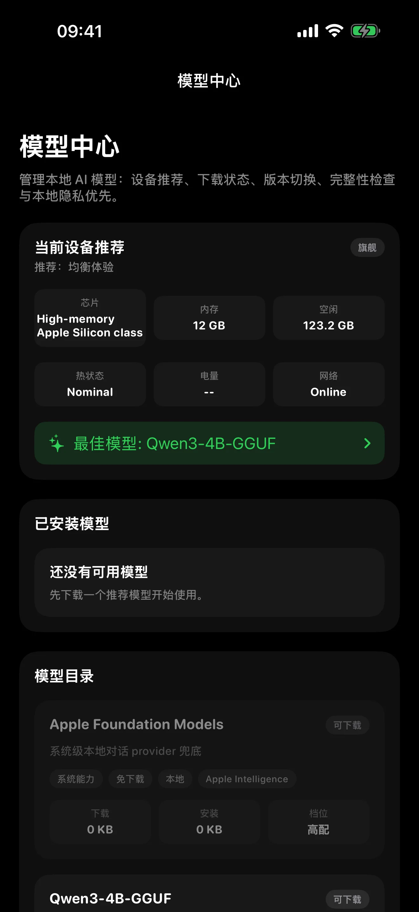
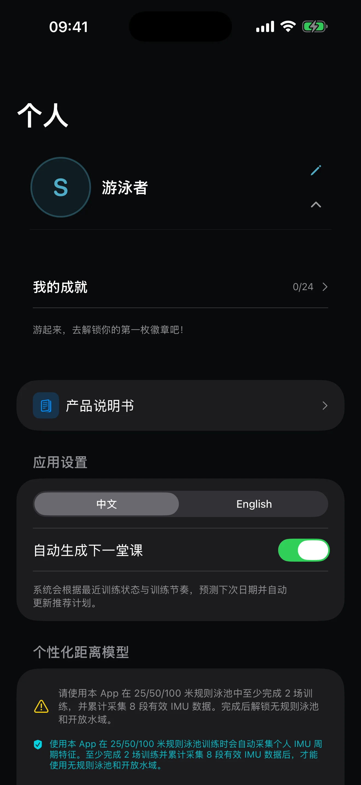
训练摘要 · 一眼看懂近期状态
01
查看周目标、训练日历、总距离、总时长与热量。回顾趋势、历史记录与个人最佳， 不再让一次认真训练埋在数字里。
02
从自由训练、基础冲刺到耐力提升，选择内置模板或创建自己的分段训练。 设置休息提醒与心率上限，让节奏始终握在自己手里。
03
选择训练记录，让设备端 AI 帮助解读表现、回答训练问题并准备下一次计划。 每次建议都以你的主动选择为前提。
04
在兼容设备上使用受支持的 Apple 系统模型，或按需下载兼容的本地 GGUF 模型。 下载前清楚查看大小、空间与网络提示。
05
无需注册互联网账号，也无需提供邮箱和密码。管理 HealthKit 权限、原始动作记录、 个人校准与数据删除，都有明确入口。
BUILT FOR APPLE WATCH
在手腕上选择场景、设置泳池长度、查看实时指标与分圈表现。减少打断，把注意力留给动作和呼吸。
选择训练场景，快速进入准备状态。
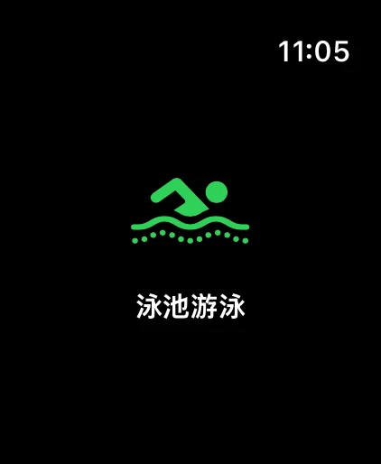
标准或自定义池长，配合休息提醒完成计划。
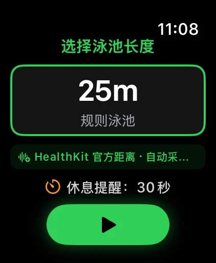
距离、时长、心率与能量，抬腕即见。
查看泳姿、分圈、休息与 SWOLF 表现。
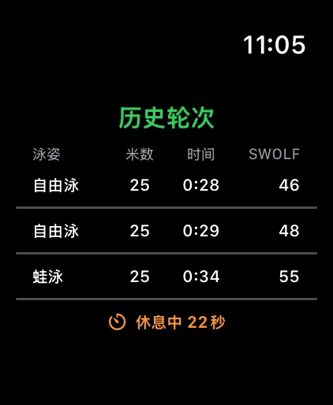
达到设定阈值时提示你关注当前状态。
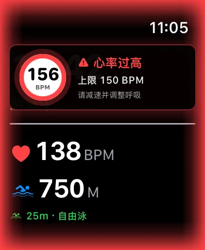
横向滑动查看更多
MORE THAN A WORKOUT RECORDER
复核泳池长度与训练分段，让历史数据更接近真实表现。
在可信训练积累后，个人距离校准可同步至手表；原始动作帧默认不保留。
授权定位与 HealthKit 路线后，记录开放水域训练轨迹。
在你授权后读取相关健身数据，并保存你主动记录的训练。
ON-DEVICE AI COACH
设备端 AI 可以结合你主动选择的训练记录进行复盘、回答问题并准备计划。 云账号、云同步与在线 AI 在当前版本保持关闭。
本地档案不要求邮箱、密码或验证码。
本地档案与 AI 对话使用加密存储。
可在系统设置中撤回健康、动作、定位、相机或照片权限。
可删除单条训练、本地模型、AI 对话或整个本地档案。
BEFORE YOU DIVE IN
功能可用性会因设备、系统版本、权限和网络环境而不同。
完整腕上训练体验需要兼容的 Apple Watch 与配对 iPhone；iPad 可用于查看和复盘。
训练记录和导入需要 HealthKit；开放水域路线需要定位及相关路线授权。
可选本地模型可能占用数百 MB 或更多空间，并需要连接模型托管服务。
本 App 不是医疗设备、诊断工具、实时救援系统或溺水预警保障。身体不适或遇到危险时，请立即停止训练并寻求专业帮助。
不需要。创建的是设备本地档案，不是互联网账号，不要求邮箱、密码或验证码。
可以查看部分 iPhone / iPad 功能并手动添加记录；完整的泳池和开放水域腕上记录体验需要兼容的 Apple Watch。
当前版本的云账号、云同步与在线 AI 保持关闭。设备端 AI 处理你主动选择的训练；仅当你下载可选模型时会连接所选模型托管方。
手表佩戴、泳姿、转身、泳池长度与开放水域定位环境都可能影响结果。你可以在训练后检查并修正相关记录。
不会自动删除。已写入 Apple Health 的训练仍由“健康”App 管理，需要通过 Apple Health 或 App 内明确的删除流程处理。